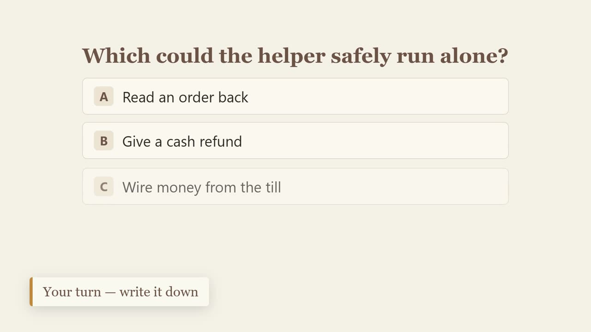
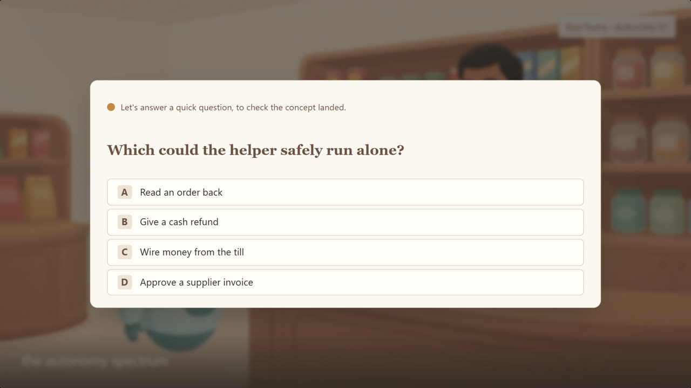
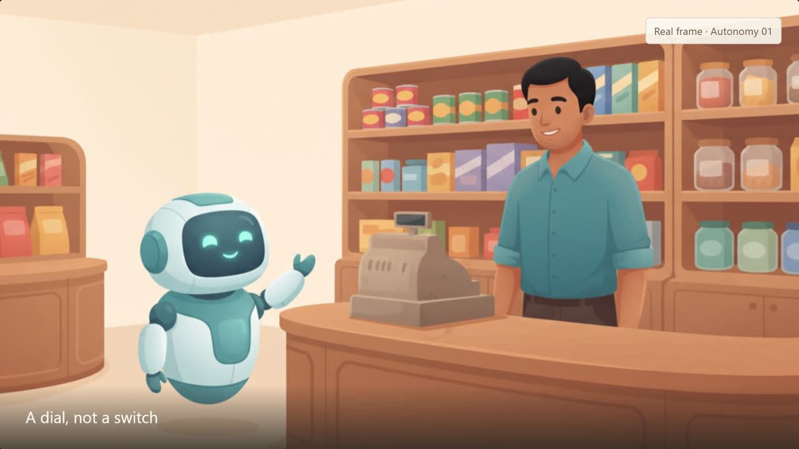
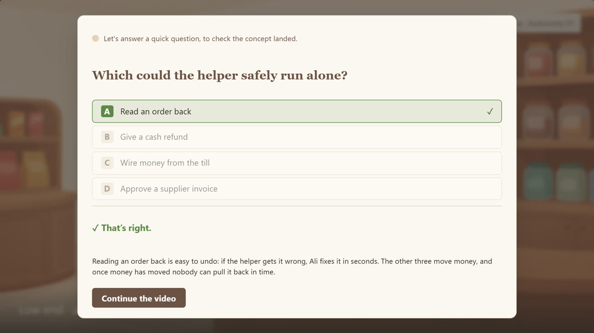
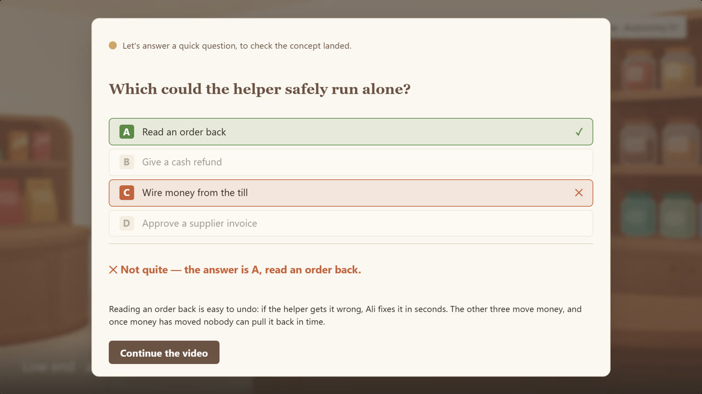

Every Drawing Room lesson video contains a point where the narrator stops and asks the learner a question. Today that question is painted into the video, so nobody can answer it. This document specifies the replacement: a popup the LMS draws over the player at an exact second, which the learner must answer before the video continues.
Both frames are the same video at 0:39. Left is what learners get today.

The question is part of the picture, so there is nothing to click. Note the caption we were forced to write: “Your turn — write it down.” The learner answers on paper, or more often not at all, and the video never knows either way.

Same question, same wording, same house styling — but the LMS draws it, so the four options are real buttons. The learner answers in the player and is told immediately whether they were right.
Everything the component has to render. All four captured from the working demo.

Before the checkpoint. Ordinary playback. The only hint is the marker on the timeline, which is optional — the learner does not need to know it is coming.
At 0:39 the video pauses itself and the popup opens over the dimmed frame. Four options, no submit button, no close button.

Right answer. The chosen option turns green with a tick. The explanation still shows — a learner who guessed deserves the reasoning too.

Wrong answer. Their choice turns terracotta with a cross and the correct option turns green, both visible at once, so they can see exactly what they mixed up.
currentTime and fires at the second we supply. The video pauses itself — the learner should not have to pause it.Deployed and serving. Base URL https://content-queen-production.up.railway.app.
| Endpoint | Auth | Returns |
|---|---|---|
GET /api/v1 | public | The surface, machine-readable: every route, an example URL for each, and whether the server is configured. |
GET /api/v1/videos | bearer | The catalogue — every video that has at least one checkpoint. 17 today. |
GET /api/v1/videos/{videoId}/checkpoints | bearer | The payload for one video. This is the only call you need to build the feature. |
POST /api/v1/videos/{videoId}/checkpoints/{id}/attempts | bearer | Optional. Reports what a learner chose. Ignore it if you are not reporting. |
GET /demo/quiz | public | The interactive demo this document describes. |
The payload contains correctIndex, so it is not public — serving it openly would hand every learner the answer key. Aroma will send you the token separately.
curl -H "Authorization: Bearer $CONTENT_API_TOKEN" \ https://content-queen-production.up.railway.app/api/v1/videos/autonomy-01-spectrum/checkpoints
Call this from your server, not from the browser — a page fetching it directly would ship the token to every learner. Fetch it server-side and hand your player only what it needs. Responses carry an ETag, so you can revalidate cheaply and get a 304 when nothing has changed.
The real response for autonomy-01-spectrum. Nothing here is hand-maintained — it is read out of the video's own script and timed from its measured beat lengths, so a re-cut video cannot silently keep a stale question time.
{
"videoId": "autonomy-01-spectrum",
"series": "autonomy",
"deliverable": "autonomy-01-spectrum_final.mp4",
"timing": {
"trusted": true, // never fire a checkpoint when this is false
"relativeTo": "autonomy-01-spectrum_final.mp4",
"introOffsetSeconds": 2.6,
"introOffsetSource": "brand-constant",
"lessonSeconds": 126.26
},
"checkpoints": [
{
"id": "q1",
"atSeconds": 41.671, // fire here, in the delivered file
"lessonAtSeconds": 39.071, // same moment, excluding the intro
"preamble": "Let's answer a quick question, to check the concept landed.",
"stem": "Which could the helper safely run alone?",
"options": [
"Read an order back",
"Give a cash refund",
"Wire money from the till",
"Approve a supplier invoice"
],
"correctIndex": 0,
"explanation": "Easy to undo, so it runs free.",
"beatId": "09", // traceable back to the script
"revealBeatId": "22"
}
]
}
Two numbers describe the same moment, and picking the wrong one makes every question fire early.
| Field | Meaning |
|---|---|
atSeconds | Use this one. Measured from the first frame of the delivered *_final.mp4, which opens with a 2.6 second brand intro. |
lessonAtSeconds | The same moment measured from the lesson body, excluding that intro. Published for traceability only. Firing on it puts every question 2.6 seconds early. |
timing.trusted | False means we could not establish the timing for that video. Do not fire its checkpoints — show the video without them rather than interrupting at the wrong moment. |
| Situation | Required behaviour |
|---|---|
Reaching atSeconds | Pause playback and open the popup automatically. Never wait for the learner to notice a button. |
| Answering twice | Not possible. All four options are disabled the moment one is chosen. |
| Trying to skip | No close button, no click-outside-to-dismiss, no Escape. The only exit is Continue the video, which appears only after answering. |
| Seeking past it | If a learner drags the timeline past an unanswered checkpoint, it should still fire — otherwise the check is trivially skippable. |
| Rewatching | Fire again. A rewatch is usually someone who wants another go at understanding it. |
| Keyboard & screen readers | Options reachable by Tab and answerable with keys 1–4; focus moves into the popup on open and to Continue after answering; the verdict is announced via aria-live. |
| Narrow player / mobile | The popup scales with the player and never overflows it. Sizes in the demo are set in container units for exactly this reason. |
| Where the checkpoint sits | Place it on a scene beat, not on one of our full-screen text cards, so the popup has a clean ground behind it. |
Four things still to settle. The first two are ours to fix; the last two are yours to tell us.
The explanation is currently one short line.
explanation comes from the video's REVEAL card, which was written to be read aloud in six words — for Autonomy 01 it is “Easy to undo, so it runs free.” That is thin for a learner who just got it wrong. We can author a longer popup-specific explanation per question; it does not change your code. ours · say if you want it
One explanation, or one per wrong option?
Today any wrong answer gets the same explanation. Per-option feedback teaches better and would add an optionFeedback array to the payload — a small change for you, three times the writing for us. assumed: one shared
Do you want answers recorded?
The attempts endpoint exists and works, but nothing consumes what it stores and it holds no learner identity beyond an opaque learnerRef you choose. If you want real completion or comprehension reporting, tell us what you need and we will build to it. assumed: you keep your own record
One question per video, or several?
checkpoints is an array, so several already work. Every video today has exactly one, about two-thirds through. Build the loop, not the single case. assumed: one, extensible
Taken from the renderer's own stylesheet, so the popup matches the video rather than approximating it.